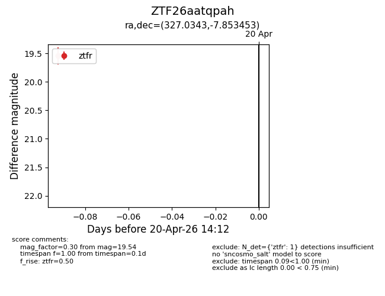
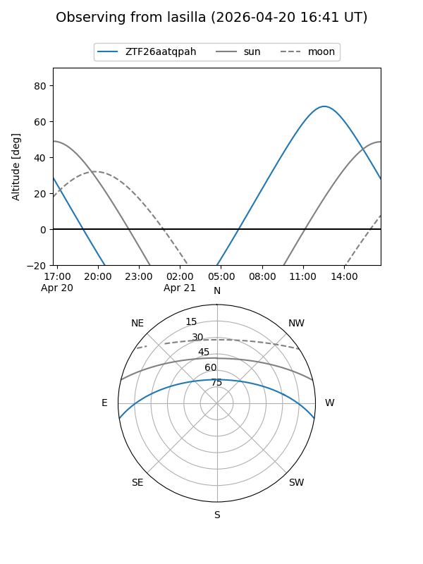
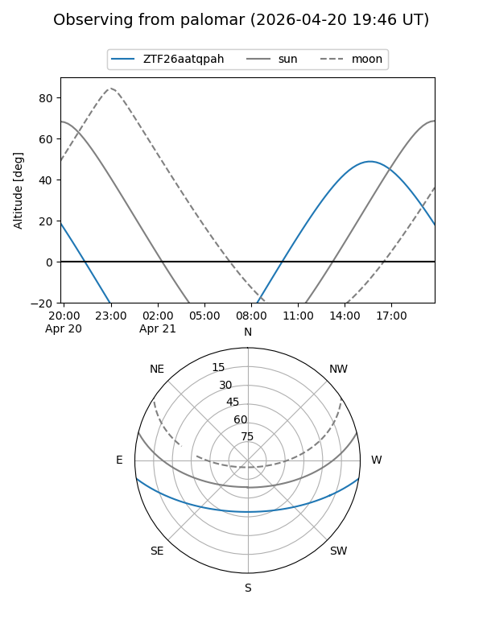

ZTF26aatqpah
Target ZTF26aatqpah at 2026-04-20 14:23
Aliases and brokers:
FINK: link
Lasair: link
ALeRCE: link
alt names
ZTF26aatqpah (ztf,fink_ztf)
Coordinates:
equatorial (ra, dec) = 327.0343,-7.85345
equatorial (HMS+DMS) = 21:48:08.24,-07:51:12.43
galactic (l, b) = (48.1416,-42.58453)
Flags:
Photometry:
last ztfr=19.54
1 ztfr detections
Lightcurve

Visibility


Additional plots